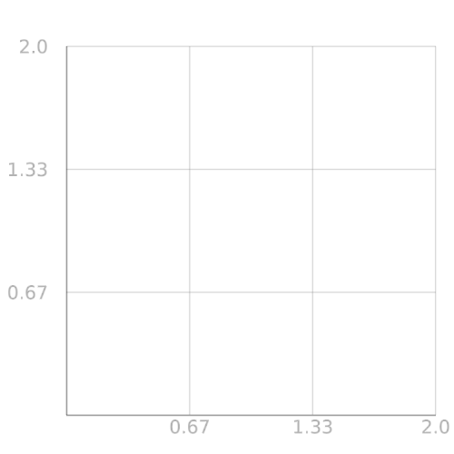
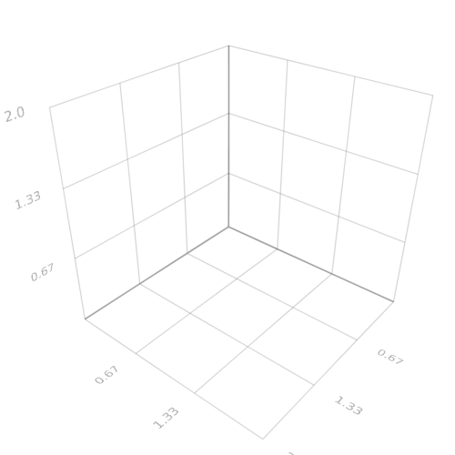
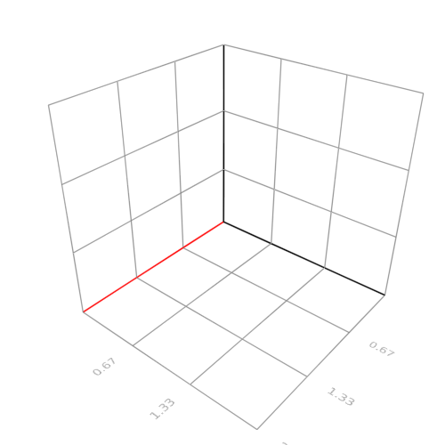

Axis
The axis is just a scene object, making it easy to manipulate and share between plots. Axis objects also contains the mapping you want to apply to the data and can interactively be changed. An Axis object can be created from any boundingbox and inserted into any plot.
MakiE.axis — Function.Creates an axis visualization for a certain bounding box.
Attributes:
Attribute axisnames, conversion function to_text
____________________
Attribute visible, conversion function to_bool
____________________
Attribute showticks, conversion function to_bool
____________________
Attribute tickfont2d, conversion function to_font
____________________
Attribute tickfont3d, conversion function to_font
____________________
Attribute showaxis, conversion function to_bool
____________________
Attribute showgrid, conversion function to_bool
____________________
Attribute scalefuncs, conversion function to_scalefunc
____________________
Attribute gridcolors, conversion function to_color
____________________
Attribute gridthickness, conversion function to_3floats
____________________
Attribute axiscolors, conversion function to_color
____________________
using MakiE
scene = Scene(resolution = (500, 500))
aviz = axis(linspace(0, 2, 4), linspace(0, 2, 4))
center!(scene)
using MakiE
scene = Scene(resolution = (500, 500))
aviz = axis(linspace(0, 2, 4), linspace(0, 2, 4), linspace(0, 2, 4))
center!(scene)
Interacting with the Axis
One can quite easily interact with the attributes of the axis like with any other plot:
# always tuples of xyz for most attributes that are applied to each axis
aviz[:gridcolors] = (:gray, :gray, :gray)
aviz[:axiscolors] = (:red, :black, :black)
aviz[:showticks] = (true, true, false)